- 00 开篇词 你好，产品经理！你的未来价值壁垒在哪儿？.md.html
- 01 行业视角：产品经理眼中的人工智能.md.html
- 02 个人视角：成为AI产品经理，要先搞定这两个问题.md.html
- 03 技术视角：AI产品经理需要懂的技术全景图.md.html
- 04 过来人讲：成为AI产品经理的两条路径.md.html
- 05 通过一个 AI 产品的落地，掌握产品经理工作全流程.md.html
- 06 AI 模型的构建过程是怎样的？（上）.md.html
- 07 AI模型的构建过程是怎样的（下）.md.html
- 08 算法全景图：AI产品经理必须要懂的算法有哪些？.md.html
- 09 K近邻算法：机器学习入门必学算法.md.html
- 10 线性回归：教你预测，投放多少广告带来的收益最大.md.html
- 11 逻辑回归：如何预测用户是否会购买商品？.md.html
- 12 朴素贝叶斯：让AI告诉你，航班延误险该不该买？.md.html
- 13 决策树与随机森林：如何预测用户会不会违约？.md.html
- 14 支持向量机：怎么预测股票市场的涨与跌？.md.html
- 15 K-means 聚类算法：如何挖掘高价值用户？.md.html
- 16 深度学习：当今最火的机器学习技术，你一定要知道.md.html
- 17 模型评估：从一个失控的项目看优秀的产品经理如何评估AI模型？.md.html
- 18 核心技能：产品经理评估模型需要关注哪些指标？.md.html
- 19 模型性能评估（一）：从信用评分产品看什么是混淆矩阵？.md.html
- 20 模型性能评估（二）：从信用评分产品看什么是KS、AUC？.md.html
- 21 模型性能评估（三）：从股价预测产品看回归算法常用的评估指标.md.html
- 22 模型稳定性评估：如何用PSI来评估信用评分产品的稳定性？.md.html
- 23 模型监控：产品经理如何建设算法模型监控指标体系？.md.html
- 24 推荐类产品（一）：推荐系统产品经理的工作职责与必备技能.md.html
- 25 推荐类产品（二）：从0打造电商个性化推荐系统产品.md.html
- 26 预测类产品（一）：用户复购意向预测的底层逻辑是什么？.md.html
- 27 预测类产品（二）：从0打造一款预测用户复购意向的产品.md.html
- 28 预测类产品（三）：从0打造一款“大白信用评分产品”.md.html
- 29 自然语言处理产品：从0打造一款智能客服产品.md.html
- 30 AI产品经理，你该如何提升自己的价值？.md.html
- 31 AI产品经理面试，这些问题你必须会答！.md.html
- 春节加餐1 用户增长模型：怎么利用AI技术判断新渠道性价比？.md.html
- 春节加餐2 一次答疑，带你回顾模型评估的所有基础概念.md.html
- 期中周测试题 ，你做对了吗？.md.html
- 期中答疑 AI产品经理热门问题答疑合集.md.html
- 结束语 唯一不变的，就是变化本身！.md.html
- 捐赠
27 预测类产品（二）：从0打造一款预测用户复购意向的产品
你好，我是海丰。
上节课，我们学习了帮助运营同学提升用户复购意向的底层逻辑，并在课程结尾的时候说了，最终要找到商品和用户之间的关联关系，然后通过分类算法计算出某个用户在商品品类下的 CVR，进而训练模型。这个模型就是用户对商品品类的复购模型，它具体该怎么构建呢？
这节课，我们一起来打造一个预测用户复购意向的模型，来真正帮助运营同学解决问题。
开发流程
机器学习项目开发的一般流程是数据准备、特征工程、模型训练、模型验证，以及模型融合。下图就是一个机器学习项目流水线式的开发流程，我们今天要实现的高潜用户复购模型也是基于这样的流程来构建的。
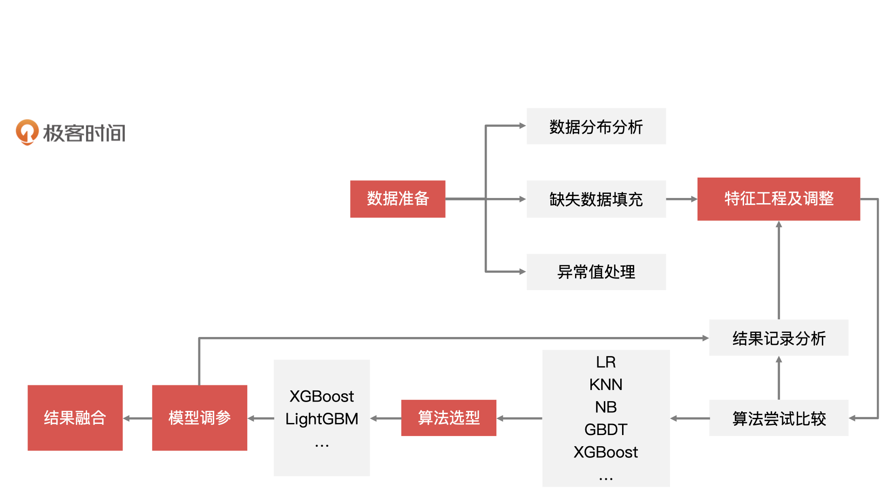
数据准备
在进行特征构建和模型开发之前，我们需要对数据的情况进行了解，你可以参考第 5 讲中讲过的，产品经理在数据准备环节中需要做的工作。另外，我也总结了本阶段产品同学需要考虑的几个问题：
- 数据源来自哪里？即数据如何获取，这里包括内部业务数据、跨部门集团内数据、外采数据。
- 数据量是否充分，是否还要外部数据补充？
- 数据是原始数据还是加工后的数据？如果是二次加工后的数据，还需要了解数据加工方法。
- 数据的业务背景是什么，其中每个字段代表什么含义？
- 数据字段是什么类型？每个字段都属于什么分布？
- 数据本身是否有噪音，是否需要进行清洗和降维？- …
数据明细
那我们今天要讲的这个案例，它的数据样本主要抽取了“618”之前和之后 3 个月内，匿名用户的购买行为日志数据、用户画像数据，以及是否为复购用户的标签。这些样本数据会以用户行为日志表、用户属性特征表，以及用户复购统计表的形式展示出来。
下面，我们就来详细说说，这三张数据表应该包含哪些信息。这样，当在实际工作中遇到需要构建复购模型项目的时候，你就可以参考我整理的这三张数据样例表了。
首先，我们来看用户行为日志样例表。
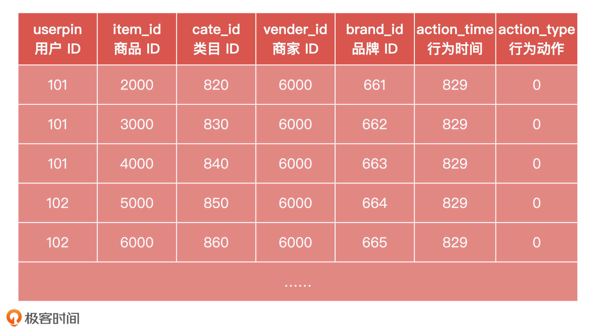
其中，用户行为动作取值范围是：0、1、2、3。其中，0 表示点击、1 表示加购、2 表示下单、3 表示收藏。
然后，我们来看用户属性特征样例表（用户画像信息）。
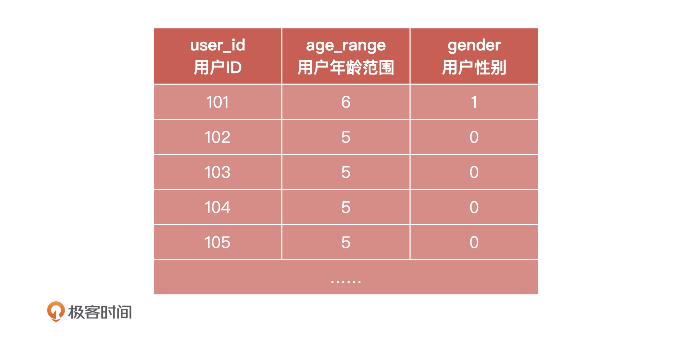
这里我要补充说明两点：用户年龄的取值范围是1、2、3、4、5、6。其中，1 表示0-15、2 表示16-25、3 表示26-35、4 表示36-45、5 表示46-55、6 表示56及以上；用户性别的取值范围是：0、1、2。其中，0 表示女性、1 表示男性、2 表示未知。
最后，我们来看用户复购统计样例表。
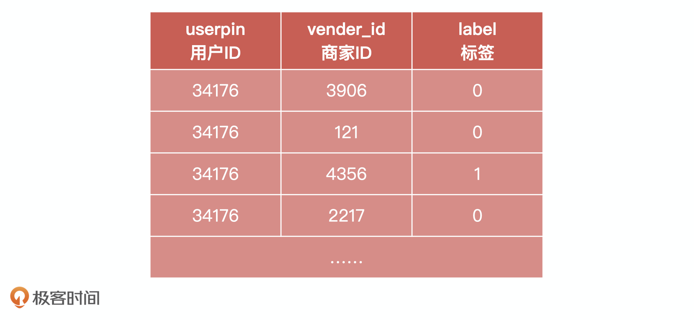
这里我要补充说明一点：用户标签的取值有0或者1。其中，0 表示非重复购买、1 表示重复购买，测试集此字段为 Null。
数据处理
有了这些数据之后，接下来我们就要根据这些用户的行为和画像信息，进行数据处理的工作。
我们首先要做的，就是通过整体数据的分布情况，来判断正负样本的均衡程度。在实际开发过程中，我们通常会利用 Python 的 Matplotlib 库来分析数据的分布。下图就是正负样本的数据分布图。
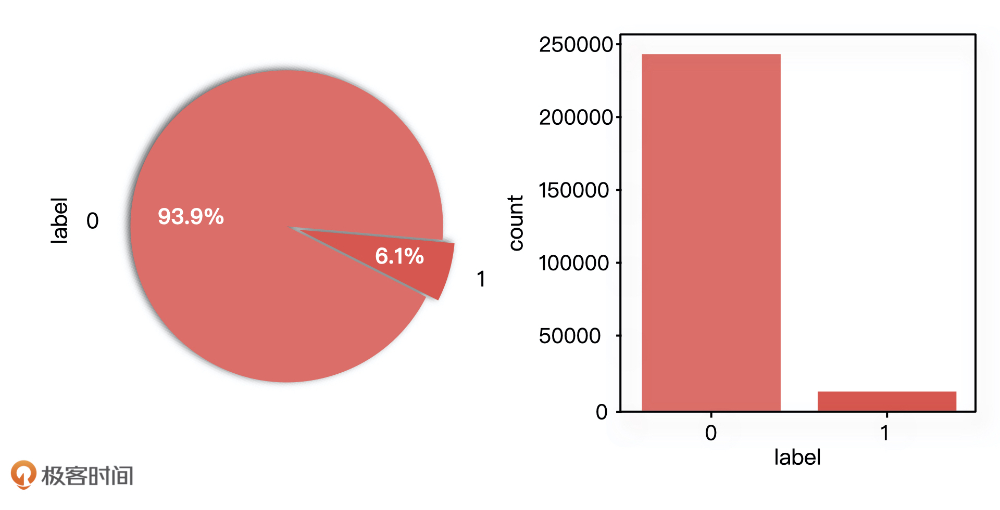
从图中我们可以看出，样本数据的分布是不均衡的。这个时候，我们就需要采取一些采样方法来处理样本数据，常用的有随机欠采样、随机过采样、基于聚类的过采样。
随机欠采样就是减少分类中多数样本的数量，如减少 label = 0 的样本数量，再重新和 label = 1 的样本组合成新的训练集。
随机过采样就是复制分类中少数样本的数量，如复制多份 label = 1 的样本的数量，再重新和 label = 0 的样本组合成新的训练集。
SMOTE 算法是基于随机过采样的一种改进方法。由于随机复制少数样本增加样本训练的模型缺少泛化能力，因此 SMOTE 算法采用对少数样本进行人工合成的方式，做法就是计算少量类别的样本与所有样本点的距离，找到最近的 k 个样本，再通过公式数学公式: \( x\_{newj} \\ = \\ x\_{i} \\ + \\ rand(0, \\ 1) \\ \* \\ (x\_{j} \\ - \\ x\_{i}) \)生成新的样本。
当然，影响复购的因素不只有整体数据分布的影响，还有如店铺、用户、性别、年龄等因素。因此在实际的开发中，我们还需要逐一对采样样本中的每一个因素进行数据可视化操作。如果发现样本数据不均衡就重复刚才的操作，如果处理不了就只能放弃了。
在处理完不均衡样本数据分布之后，我们还需要查看采样数据中各因素的缺失值情况，比如查看年龄值缺失的情况、性别值缺失的情况，或者用户行为日志数据缺失的情况。具体的操作同样是通过 Python 程序进行分析，具体代码产品经理不需要过度的关注，我也就不再详细说了。
特征工程
接下来，我们就可以开始构建特征工程了。特征工程的构建流程我们在第 06 讲已经讲得很清楚了。简单来说就是，对数据准备环节中抽取出来的样本数据进行数据清洗、特征提取和特征选择，并最终构建好用于模型训练的训练集和测试集数据。
下面，我们就对复购模型进行关键的基础特征和统计特征的抽取操作，数据特征抽取的思路可以从三个角度进行。
- 统计用户历史行为：对用户历史行为按照 userpin 进行分组，然后统计用户在所有店铺中，对商品、品类、品牌的购买、点击、收藏和加购等行为的次数。
- 统计店铺历史行为：对用户历史行为按照 vender_id 进行分组，然后统计所有用户在此店铺上的行为次数。
- 统计用户在店铺上的历史行为：对用户历史行为按照 user_id 和 vender_id 进行分组，统计每个单独的用户在此店铺上的行为次数。
最终，在复购模型的特征构建中，基于统计次数的特征提取，我们至少能提取出如下表中这些特征信息：
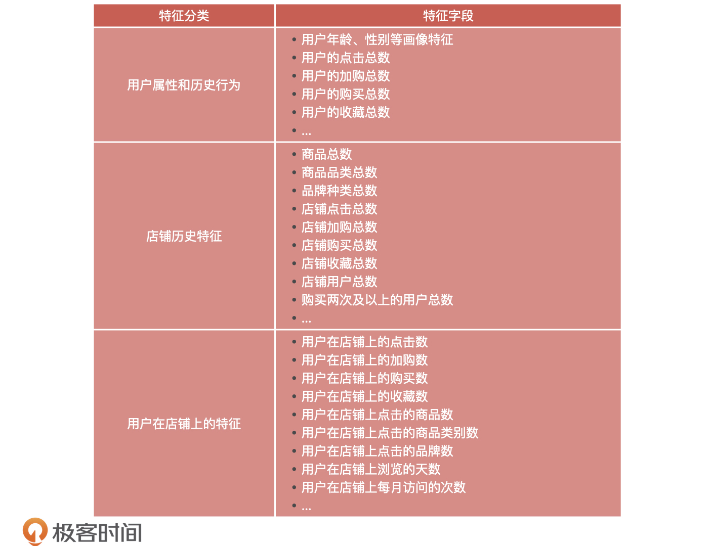
当然，除了简单地统计个数信息，我们还可以基于组合特征以及文本信息进行特征的提取。常见的做法是，把一阶离散特征两两组合构成高阶的组合特征，这么做目的就是提高复杂关系的拟合能力。比如，我们可以把中文、英文这样的语言和电影、电视剧这样的类型，组成“中文电影”、“中文电视剧”、“英文电影”、“英文电视剧”这四个特征。
到此，我们就构建好复购模型的特征工程了，再结合用户对商家店铺的购买标签，我们就可以进行下一阶段模型训练的工作了。
模型训练
首先我们要知道，用户重复购买预测是一个二分类问题，只要是分类问题就是属于有监督学习，所以我们的复购模型就是一个有监督的二分类学习问题。接下来，我们就可以根据提前准备好的训练集数据和测试集数据，通过分类算法进行模型的训练了。
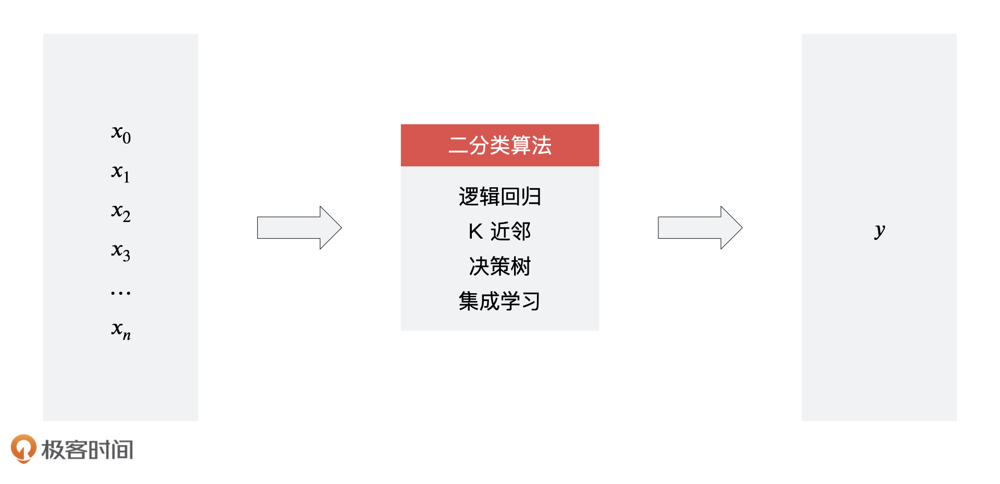
对于算法的选型，我们可以选择之前课程中学习的算法，如逻辑回归、K 近邻、决策树、随机森林等等。每一个算法都可以训练出一个 数学公式: \( x \)（样本）到 数学公式: \( y \)（标签）的函数，然后在使用的过程中，我们只需要通过这个函数导入一个未知的 数学公式: \( x \)，就可以预测出对应的 数学公式: \( y \) 标签的概率，然后我们再将概率大于 0.5 （如果要求更高的复购概率可以提高 y 值）的 数学公式: \( y \) 值表示成复购，将概率小于 0.5 的 数学公式: \( y \) 值表示成不复购。
接着，我们再通过集成学习（如加权投票法）将所有模型的预测结果进行加权平均，就能融合成最后的预测结果。
模型验证
最后，对于复购模型的预测结果，我们需要进行验证和评估。
这里，我们主要是对模型的性能进行评估。我们之前讲过，对于分类模型的性能评估，我们一般会使用到混淆矩阵、KS、AUC，并且混淆矩阵的结果还要结合准确率、精确率和召回率和F1值一起来看。
下面，我们就分别说说对于复购模型来说，这些指标该怎么求。首先，我们来说混淆矩阵。假设，这个复购模型对 15 个样本进行了预测，预测的结果如下：
- 真实复购用户 = 0 1 1 0 1 1 0 0 1 0 1 0 1 0 0
- 预测复购用户 = 1 1 1 1 1 0 0 0 0 0 1 1 1 0 1
其中，第一行数据代表用户的真实情况，第二行代表用户的预测结果。它们对应的混淆矩阵如下：
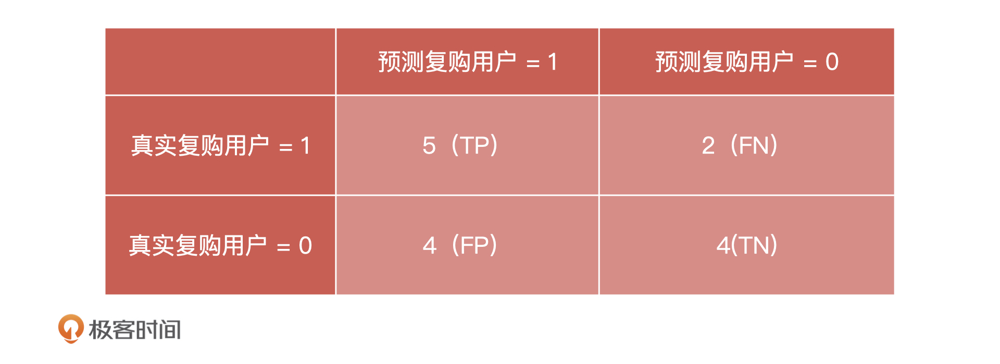
其中，TP和TN代表模型预测正确，也就是说一共有9个样本预测正确，6个样本预测错误。根据得到的数据，再结合下面的公式，我们就可以得到模型预测的准确率、精确率、召回率和F1值了。
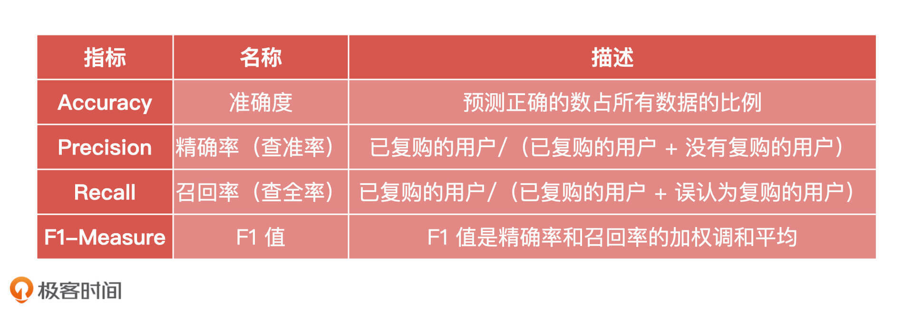
然后，我们可以继续来求预测结果的ROC曲线和AUC面积。
我们先来看求得的ROC曲线，它的横轴为 FPR，FPR 越大表示预测正类中实际负类越多。它的纵轴为 TPR，TPR 越大表示预测正类中实际正类越多。我们理想的目标肯定是 TPR = 1、FPR = 0，即图中 (0, 1) 点，所以 ROC 曲线越靠拢 (0, 1) 点，越偏离 45° 对角线，它的效果就越好。
而 AUC 就是 ROC 曲线下方的面积，AUC 不超过 1且越接近于 1，就说明模型分类的准确度越高。
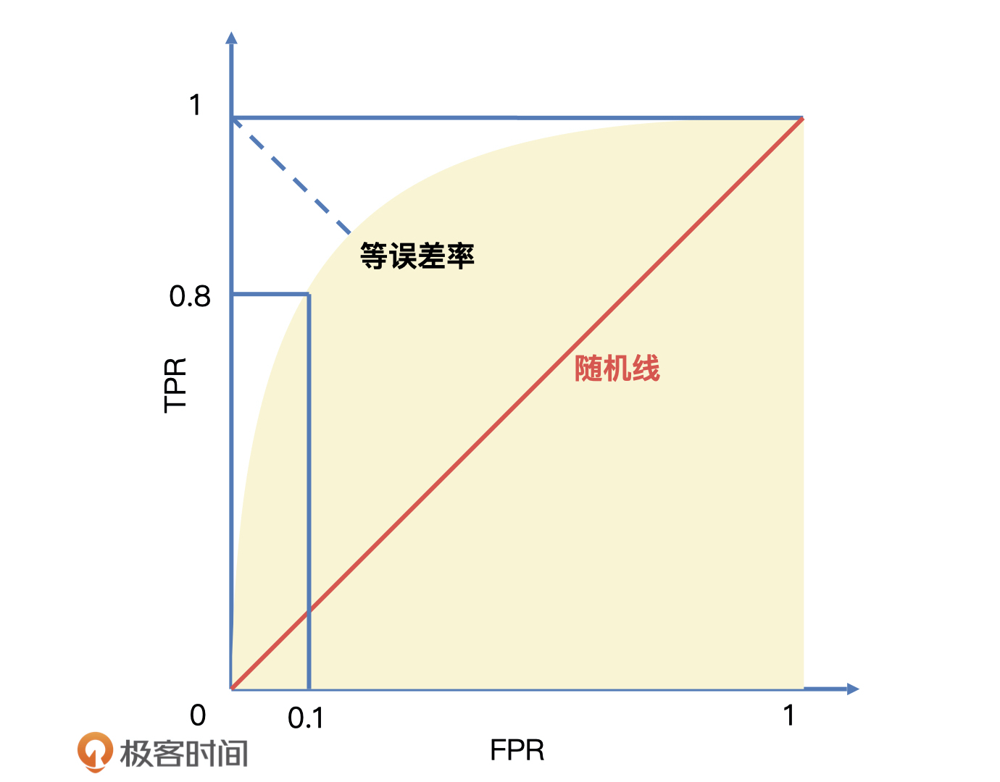
从这张图中我们可以看到，整个 AUC 面积远大于 0.5且趋近于 1 ，所以我们可以理解为复购模型是可用的。
小结
这节课，我们一起构建了一个复购预测系统。产品经理需要重点关注的内容可以从能力、技术和岗位这三方面进行总结。
首先是能力，能力也可以分为两方面。
一方面是要掌握用户分层的方法：提升复购的前提是掌握用户分层，也就是我们上一讲说的用户生命周期的定义。无论是策略分层还是模型分层，都是产品经理需要掌握和吃透的，并且你还要懂得怎么去分析用户的“正向跃迁率”。
另一方面是要掌握预测模型的构建：复购模型是一个比较经典的 AI 预测模型，产品经理要掌握模型的整个构建过程和评价标准。
关于技术：对于从事用户预测相关工作的产品经理来说，只要掌握机器学习算法模型的原理就可以了，比如你要做到对逻辑回归、聚类分析、决策树、随机森林等常用算法的理解。
关于岗位：构建复购预测模型一般是对增长产品经理的岗位要求，比如增长策略产品经理。增长策略的核心就是做用户运营，所以，如果你想要从事这方面的工作，那除了我今天讲的产品经理必备的知识以外，用户运营方面的知识你也要去了解。我在下面给出了一个增长策略产品经理的JD，你可以作为参考。- 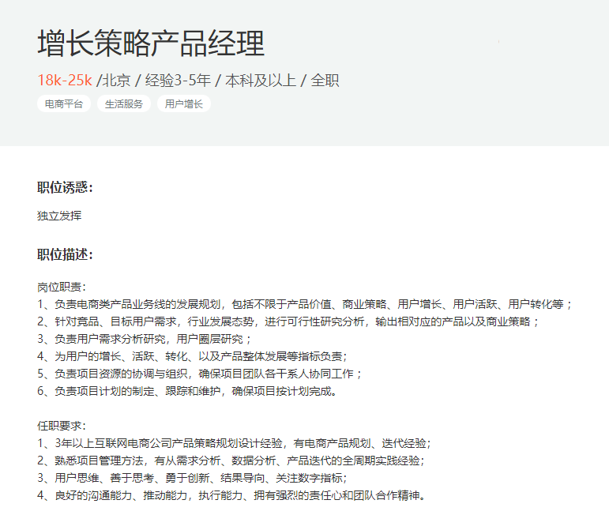
为了帮助你查缺补漏，我在文稿中把预测类模型要关注的核心知识点总结成了一张脑图，希望你能好好利用起来。
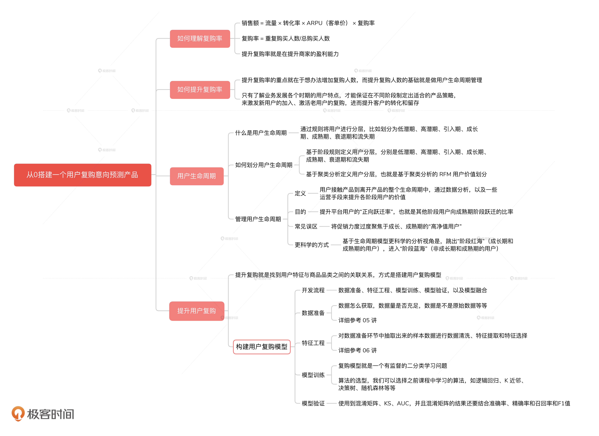
课后讨论
如果公司让你负责一个增长小组的工作，你能给出什么样的规划和实施方案呢？
期待在留言区看到你的思考，我们下节课见！
© 2019 - 2023 Liangliang Lee. Powered by gin and hexo-theme-book.